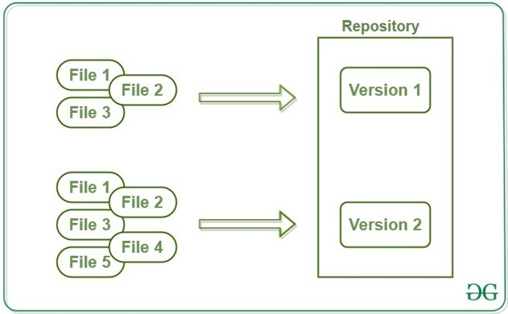

Repozitorijs jeb Git projekts ietver visu ar projektu saistīto failu un mapju kolekciju, kā arī katra faila pārskatīšanas vēsturi.Katram projektam Git sistēmā izveido repozitoriju (repo), kurā glabājas visi projekta faili, piemēram, index.html, style.css, script.js un attēlu datnes, ja tas ir mājas lapas projekts. Papildus var būt readme.txt fails, kur apraksta, piemēram, projekta gaitu, katra dalībnieka pienākumus vai citas būtiskas projekta nianses
